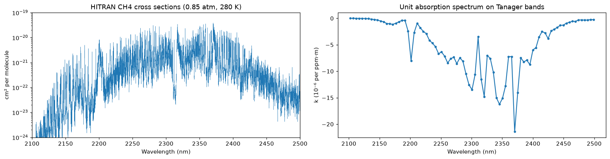
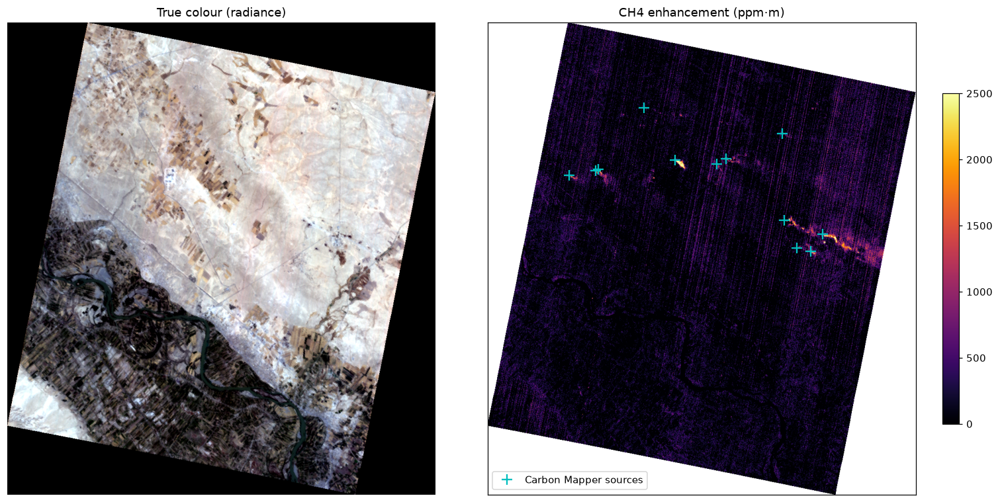
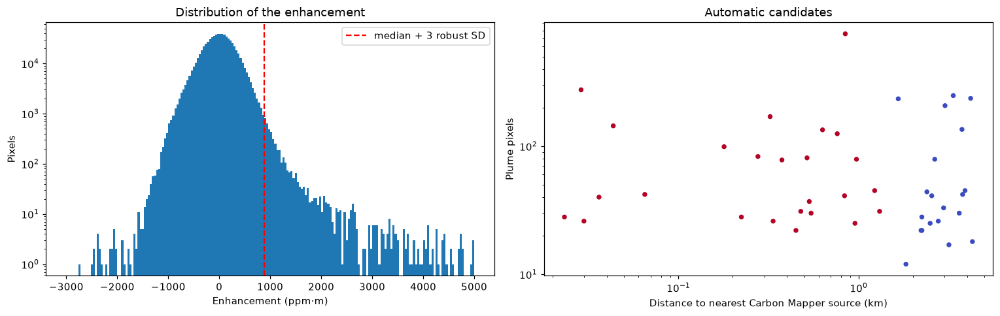

Methane absorbs sunlight in narrow lines between 2200 and 2400 nm. An imaging spectrometer that resolves this region sees a plume as a slight darkening of the radiance in exactly the methane bands, a few percent at most. This notebook builds a methane unit absorption spectrum from HITRAN line data, maps the methane enhancement over oil fields in eastern Syria with a matched filter on Tanager radiance, segments the plumes, computes their integrated mass enhancement and emission rates, and compares every step with the plumes that Carbon Mapper published for the same scene.
Overview
Why methane, why imaging spectroscopy
Methane is the second largest contributor to human caused warming, with about 80 times the warming effect of CO₂ over 20 years. A large share of anthropogenic emissions comes from a small number of point sources: leaking wells, compressors, pipelines, flares, coal mine vents and landfills. Finding them requires pixels of tens of metres, which imaging spectrometers such as AVIRIS-NG, EMIT, PRISMA, EnMAP and Tanager provide; Tanager was launched by the Carbon Mapper coalition specifically to find and quantify such plumes.
The physics
Along the light path (sun to ground to sensor) the radiance is attenuated by methane following the Beer Lambert law. A plume adds an enhancement ΔX (in ppm·m: the extra concentration in ppm times the path length in metres) on top of the background column. For small enhancements the change in log radiance is linear:
where k(λ) is the unit absorption spectrum (per ppm·m): the band averaged change in log radiance per unit enhancement, computed from the methane absorption cross sections, the background atmosphere and the sun and view geometry (the air mass factor).
The matched filter
With the background mean radiance μ and covariance Σ, the target is t = μ ⊙ k and the enhancement estimate is (Thompson et al. 2016)
the matched filter of notebook 09_05_08 with a physical target, so the score is directly in ppm·m. For pushbroom data in sensor geometry the statistics are computed per detector column; for an orthorectified product they are computed over the scene.
From enhancement to emission rate
The integrated mass enhancement (IME) sums the excess methane mass over the plume: IME = Σ ΔX · 10⁻⁶ · ρ_CH4 · A_pixel. A simple mass balance (Varon et al. 2018) gives the emission rate Q = IME · U / L, with an effective wind speed U (from weather models) and a plume length scale L. Carbon Mapper reports Q = IME · U / fetch, where the fetch is the distance over which the plume was integrated.
Limitations
Bright and dark surfaces with SWIR structure (some soils, paints, oil stains) produce false enhancements; the background statistics must exclude plumes; wind uncertainty usually dominates the emission uncertainty; and the simple k used here ignores water vapour and surface pressure variations.
Methane Plumes with GeoLattice
hs.gas_matched_filter estimates the enhancement from radiance and a unit absorption spectrum, hs.plume_mask segments plumes, hs.plume_ime integrates their mass and hs.emission_rate converts IME to kg/h. The unit absorption spectrum is computed here from HITRAN line parameters with HAPI, the HITRAN Application Programming Interface (pip install hitran-api).
Learning objectives
Compute methane absorption cross sections from HITRAN and a unit absorption spectrum on Tanager bands for the scene’s geometry.
Run the matched filter on Tanager radiance and interpret the enhancement map and its noise.
Compare the result with Carbon Mapper’s quick look methane product.
Segment plumes, compute IME and emission rates, and compare them with published values.
Recognise false positives and the main sources of uncertainty.
Carbon Mapper plume list: source location, IME, fetch, wind and emission rate with uncertainty
hitran/CH4.data, hitran/CH4.header
HITRAN methane lines, 3950 to 4800 cm⁻¹ (about 2080 to 2530 nm), fetched with HAPI on first use
Contents
Setup
Methane absorption from HITRAN
The unit absorption spectrum
The enhancement map
Comparison with Carbon Mapper
Plumes, IME and emission rates
False positives and uncertainty
Summary and exercises
Setup
Installation. This notebook needs installation option 5 (core, spatial analysis, spatial statistics, geostatistics and remote sensing): pip install "geolattice[remote-sensing]". See “Installation options” in the GeoLattice README. It also uses hitran-api, which no GeoLattice option installs: pip install hitran-api.
Code
import warnings # warning controlwarnings.filterwarnings("ignore") # hide routine library warningsfrom pathlib import Path # file pathsimport numpy as np # arraysimport pandas as pd # tablesimport matplotlib.pyplot as plt # figuresimport geolattice # GeoLatticefrom geolattice.rsense import hyperspectral as hs # hyperspectral cubes, readers and toolsplt.rcParams.update({"figure.dpi": 110}) # figure resolutionDATA = Path("../../../../Data/08_remote_sensing/08_05_HyperSpectral") # data folder next to this notebookTANAGER = DATA /"Tanger"# Planet Tanager sample scenesOUT = Path("outputs") # results written by this notebookOUT.mkdir(exist_ok=True) # create it if neededdef tanager_file(category, product="sr"):"""Path of a Tanager product (sr or radiance) for a scene category folder."""returnnext((TANAGER / category).glob(f"*/*_ortho_{product}_hdf5.h5"))print("GeoLattice", geolattice.__version__) # library version used for this notebookimport json # plume attributesimport time # timingimport geopandas as gpd # plume pointsimport rioxarray # reproject the quick look productfrom scipy import ndimage as ndi # labelling and filteringGHG =next((TANAGER /"GHG-plumes").iterdir()) # scene folderHITRAN = DATA /"hitran"# cache for HITRAN line data
GeoLattice 0.3.49
Methane absorption from HITRAN
HAPI downloads the line list once (about 9 MB) and caches it in Data/08_remote_sensing/08_05_HyperSpectral/hitran. Absorption cross sections are computed on a 0.01 cm⁻¹ grid with Voigt line shapes for a representative lower troposphere (0.85 atm, 280 K).
Code
import contextlib, io # silence HAPI's log messageswith contextlib.redirect_stdout(io.StringIO()):import hapi # HITRAN Application Programming Interface HITRAN.mkdir(exist_ok=True) hapi.db_begin(str(HITRAN)) # use the local cacheif"CH4"notin hapi.tableList(): hapi.fetch("CH4", 6, 1, 3950, 4800) # molecule 6 (CH4), main isotopologue, wavenumber range in cm-1 t0 = time.perf_counter() nu, xsec = hapi.absorptionCoefficient_Voigt(SourceTables="CH4", WavenumberRange=[3950, 4800], WavenumberStep=0.01, Environment={"p": 0.85, "T": 280.0}, Diluent={"air": 1.0}, HITRAN_units=True) # cross section, cm2 per moleculeprint(f"{len(nu):,} wavenumbers in {time.perf_counter() - t0:.0f} s | peak cross section {xsec.max():.2e} cm2")wl_hi =1e7/ nu # wavenumber (cm-1) to wavelength (nm)
85,001 wavenumbers in 14 s | peak cross section 3.90e-20 cm2
The unit absorption spectrum
The radiance is read for 2100 to 2500 nm, where methane absorbs. The sun and view zenith angles set the air mass factor (the two way path relative to the vertical). The high resolution transmittance of the background atmosphere (1.9 ppm methane) and of the same atmosphere with an extra 1000 ppm·m are both convolved with Tanager’s band responses; the difference of their logarithms per ppm·m is the unit absorption spectrum.
Code
rad_file =next(GHG.glob("*_ortho_radiance_hdf5.h5"))rad = hs.read_tanager(rad_file, wavelength_range=(2100, 2500)) # TOA radiance, W m-2 sr-1 um-1anc = hs.read_tanager_ancillary(rad_file)sza, vza =float(anc["sun_zenith"].mean()), float(anc["sensor_zenith"].mean())amf =1/ np.cos(np.radians(sza)) +1/ np.cos(np.radians(vza)) # two way air mass factorprint(rad.shape, f"| sun zenith {sza:.1f}, view zenith {vza:.1f}, air mass factor {amf:.2f}")N_PPMM =1e-6*2.5e25*1e-4# CH4 molecules per cm2 for 1 ppm·m (air number density 2.5e25 m-3)background =1.9e-6*2.15e25# vertical background CH4 column (molecules cm-2): 1.9 ppm of the air columnT_bg = np.exp(-xsec * background * amf) # background transmittanceT_plume = T_bg * np.exp(-xsec * N_PPMM *1000* amf) # with an extra 1000 ppm·mwl, fwhm = hs.wavelengths(rad), rad["fwhm"].valuesdef to_bands(T):"""Band averaged transmittance: Gaussian response of each Tanager band.""" out = np.empty(len(wl))for i, (c, f) inenumerate(zip(wl, fwhm)): w = np.exp(-0.5* ((wl_hi - c) / (f /2.3548)) **2) out[i] = (w * T).sum() / w.sum()return outk = (np.log(to_bands(T_plume)) - np.log(to_bands(T_bg))) /1000# per ppm·mprint(f"strongest absorption {k.min():.2e} per ppm·m at {wl[np.argmin(k)]:.0f} nm "f"(1000 ppm·m darken that band by {100* (1- np.exp(1000* k.min())):.1f} %)")fig, axes = plt.subplots(1, 2, figsize=(15, 4))axes[0].plot(wl_hi, xsec, lw=0.3)axes[0].set(xlim=(2100, 2500), yscale="log", ylim=(1e-24, 1e-19), xlabel="Wavelength (nm)", ylabel="cm² per molecule", title="HITRAN CH4 cross sections (0.85 atm, 280 K)")axes[1].plot(wl, k *1e6, "o-", ms=3)axes[1].set(xlabel="Wavelength (nm)", ylabel="k (10⁻⁶ per ppm·m)", title="Unit absorption spectrum on Tanager bands")plt.tight_layout()plt.show()
(81, 1040, 943) | sun zenith 41.4, view zenith 2.8, air mass factor 2.33
strongest absorption -2.14e-05 per ppm·m at 2370 nm (1000 ppm·m darken that band by 2.1 %)

Thousands of individual lines make up the methane band; at Tanager’s 5 to 6 nm resolution they merge into a smooth unit absorption spectrum with its strongest values near 2300 to 2370 nm. A 1000 ppm·m plume darkens the strongest band by about two percent, which is why the detection works through statistics rather than by looking at single spectra.
The enhancement map
The matched filter uses all good bands between 2100 and 2500 nm and the whole scene as background (the product is orthorectified, so the per column option is off).
matched filter in 0.9 s | median 1 ppm·m, robust SD 292 ppm·m, 99.9th percentile 1513 ppm·m

The background noise of the enhancement map is about 300 ppm·m (the robust standard deviation), and the strongest plumes reach several thousand ppm·m. Elongated plumes stretch downwind (to the south east) from the Carbon Mapper source points in the oil field on the desert plateau. Two artefacts are visible. Fine vertical stripes run along track: each detector column has a slightly different response, and with scene wide statistics on the ortho grid it is not removed (per column statistics in sensor geometry, columnwise=True on a basic product, address this). And the Euphrates and its irrigated valley appear slightly negative, because dark water and wet fields have little SWIR signal and a different spectral shape from the desert that dominates the background statistics.
Comparison with Carbon Mapper
Carbon Mapper’s quick look product is an 8 bit image (scaled values without units) on a grid offset by a pixel or two, so it is reprojected onto the enhancement grid before comparison.
The two maps show the same plumes in the same places. The quick look only has values inside Carbon Mapper’s plume masks (everything else is no data), so the correlation of r = 0.77 is measured over those plume pixels: within the plumes, the two retrievals agree on where the enhancement is highest, although the methods differ (Carbon Mapper uses its own processing, target spectra and filtering). The GeoLattice map keeps the full resolution noise and the stripes.
Plumes, IME and emission rates
hs.plume_mask segments the whole map automatically. For a like for like comparison with the published numbers, each Carbon Mapper plume is then integrated the same way: pixels within the plume’s fetch radius that exceed the background by 1.5 robust standard deviations (after a 3 by 3 median filter) and are connected to the source, summed with hs.plume_ime and converted with hs.emission_rate using Carbon Mapper’s wind speed and fetch.
Code
labels, table = hs.plume_mask(enh, sigma=3.0, min_pixels=10) # automatic segmentation of the whole sceneprint(f"automatic plume_mask: {len(table)} candidate plumes above median + 3 MAD")display(table.sort_values("n_pixels", ascending=False).head(6).round(0))X, Y = np.meshgrid(enh.x.values, enh.y.values)smooth = ndi.median_filter(np.nan_to_num(e, nan=med), 3) # suppress single pixel noiserows, masks = [], np.zeros(e.shape, int)for i, p in plumes.iterrows(): d = np.hypot(X - p.geometry.x, Y - p.geometry.y) # distance to the source (m) cand = (d <= p["fetch"]) & (smooth > med +1.5* sd) lab, _ = ndi.label(cand) touching = np.unique(lab[(d <=150) & cand]) # components within 150 m of the source keep = np.isin(lab, touching[touching >0]) masks[keep] = i +1 res = hs.plume_ime(enh - med, enh.copy(data=keep.astype(int)), plume=1) # IME of the masked pixels q_ours = hs.emission_rate(res["ime_kg"], p["wind_speed_avg"], p["fetch"]) # kg/h, Carbon Mapper wind and fetch rows.append({"plume": p["plume_id"][-1], "quality": p["plume_quality"], "pixels": res["n_pixels"],"IME GeoLattice (kg)": res["ime_kg"], "IME Carbon Mapper (kg)": p["ime"],"Q GeoLattice (kg/h)": q_ours, "Q Carbon Mapper (kg/h)": p["emission"], "Q uncertainty CM": p["emission_uncertainty"]})res_tab = pd.DataFrame(rows).set_index("plume")res_tab.round(0)
automatic plume_mask: 45 candidate plumes above median + 3 MAD
total emission of the 12 plumes: GeoLattice 15,068 kg/h, Carbon Mapper 11,750 kg/h
Read the table and scatter plots together. Across the twelve plumes the IME correlates with the published values (r = 0.83) and the median ratio is 0.99, a close agreement for an independent retrieval built from HITRAN line data and a simple atmosphere. Plumes A, D, E, F, G, H and L agree within about 20 percent, inside or near Carbon Mapper’s uncertainty bars (grey). The outliers are instructive. I and J are two to three times too high: they sit in the long band of enhancement in the south east, where several plumes merge, and a mask that grows from the source collects their neighbours’ methane too. E and F share one mask, because their sources are a few hundred metres apart. B is too low, and the smallest plumes (C, K, L) are close to the noise. Separating overlapping plumes is where analyst judgement and plume shape analysis come in. The total over all plumes is about 30 percent higher than Carbon Mapper’s, almost entirely because of I and J.
False positives and uncertainty
Code
auto = table.copy()X0, Y0 = auto["x"].to_numpy(), auto["y"].to_numpy()dmin = np.min(np.hypot(X0[:, None] - plumes.geometry.x.to_numpy()[None, :], Y0[:, None] - plumes.geometry.y.to_numpy()[None, :]), 1)auto["distance to nearest CM source (km)"] = dmin /1000near = auto["distance to nearest CM source (km)"] <1.5print(f"automatic candidates: {len(auto)} | within 1.5 km of a Carbon Mapper source: {int(near.sum())} | "f"elsewhere: {int((~near).sum())}")fig, axes = plt.subplots(1, 2, figsize=(14, 4.5))axes[0].hist(e[np.isfinite(e)], bins=200, range=(-3000, 5000), log=True)axes[0].axvline(med +3* sd, color="r", ls="--", label="median + 3 robust SD")axes[0].set(xlabel="Enhancement (ppm·m)", ylabel="Pixels", title="Distribution of the enhancement"); axes[0].legend()axes[1].scatter(auto["distance to nearest CM source (km)"], auto["n_pixels"], c=near, cmap="coolwarm", s=15)axes[1].set(xscale="log", yscale="log", xlabel="Distance to nearest Carbon Mapper source (km)", ylabel="Plume pixels", title="Automatic candidates")plt.tight_layout()plt.show()
automatic candidates: 45 | within 1.5 km of a Carbon Mapper source: 25 | elsewhere: 20

The enhancement distribution is a Gaussian core (noise) with a long positive tail (plumes and false positives). A fixed threshold keeps many small candidates far from any published source: most are surface artefacts or noise clusters, a reminder that an automatic mask is a list of candidates, not of plumes. Operational systems confirm plumes by their shape, their alignment with the wind, repeated detection on other dates and inspection by analysts.
The emission rate inherits several uncertainties: the noise in ΔX, the choice of mask threshold (at 2 robust SD instead of 1.5 the IME drops for most plumes), the wind speed (an error of 1 m/s at 2 m/s wind is a 50 percent error in Q) and the simplifications in k (one temperature and pressure, no water vapour, a fixed background column).
Summary and exercises
Key points
Methane plumes darken Tanager radiance by about two percent per 1000 ppm·m in the 2300 nm bands.
A unit absorption spectrum from HITRAN cross sections, the background column and the air mass factor turns the matched filter score into an enhancement in ppm·m.
The GeoLattice enhancement map reproduces Carbon Mapper’s plumes, and IME and emission rates computed the same way agree with the published values within their uncertainties for most plumes.
Surface artefacts produce false enhancements; masks are candidate lists, and wind speed dominates the emission uncertainty.